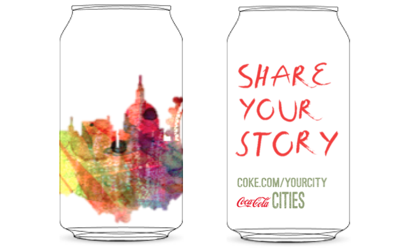

This concept is founded on idea that I am a connector at heart. I find the greatest reward in creating a more interconnected environment. This may be through fostering interactions between people, promoting more interactions between users and their surroundings, or by connecting with others myself. I find that this best translated into a beverage by creating a system around this brand rather than a system within it. Instead of defining this beverage primarily off of its literal function and design within its physical boundaries, I explored its potential to influence beyond its container.
“Share Your Story” is a project under a theoretical Coca-Cola program, "Coca-Cola Cities", that promotes a sense of community within cities. One out of 1000 Coke cans is produced to be a “Share Your Story” can that displays a dramatically different packaging. The contents remain the same and it is distributed as if it was a normal Coke. When the user selects this can, they are greeted with a vibrant, humanist design that boldly displays “Share Your Story”, as shown below.
 This high energy and joyful design is intended to reflect the vibrancy of their city that this project aims to promote. I choose to integrate this product into the mainstream Coke line so that it would have the ability to access a diverse set of individuals. Only one out of 1000 cans is a part of this project to create a sense of novelty and excitement when its been selected from the rest. It instills a sense of uniqueness when the user sees that this is a particularly rare product, which will encourage them to participate in the project.
When they visit the site displayed on the can, they are prompted to enter in their zip code. From here, a new page loads to reveal an interactive Google Maps interface of their area. Red pins are scattered throughout the city that, when clicked on, display a personal story from another user on a moment that gave them delight at this pinned location. The user can opt to take a “tour” of various areas in their city, which leads them through a number of highlighted stories posted throughout the map.
At the bottom of the page, the user is prompted to share their story of a place in the city where they experienced a joyful memory.
This project aims to promote a sense of belonging and community within cities. As cities grow, they become increasingly impersonal. Communities are no longer primarily built around geographical places, and as a result the home can simply become a singular space limited to the walls of an apartment. Through these personal stories, this project creates a more interconnected and unified urban environment.
This project is intended to be a temporary installment in the Coca-Cola brand, or one of a similar nature, which supports its mission to create widespread enjoyment. It is designed to be temporary so that it does not lose its novelty with time. However, the prompting questions on the site can vary from week to week. The first week can ask about a place where the user experienced delight, but another could ask for stories of surprising events, meaningful moments, and so on. These stories would all be focused on positive memories to ensure the project has given delight to its users.
“Share Your Story” could be seen as the first of a number of experiments under the theoretical “Coca-Cola Cities” program. There is much potential for this brand, or similar ones, to play a more interactive role specifically in urban areas. “Share Your Story” is just one of many ways this brand can create impactful marketing by promoting a more interconnected city.